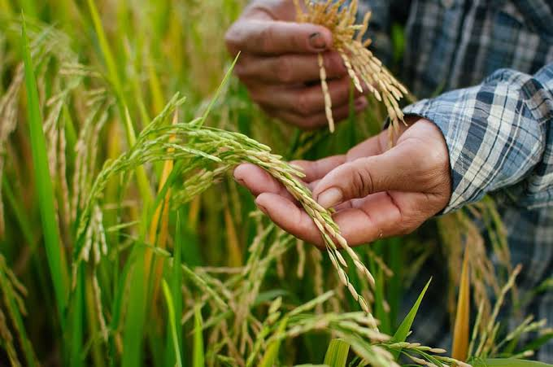

The Importance of Sustainable Agriculture
Sustainable agriculture is an approach to farming that focuses on producing long-term crops and livestock while minimizing environmental impact. It aims to enhance the health of ecosystems and communities by fostering practices that protect the environment, maintain soil fertility, and promote biodiversity.
This method of farming not only helps in preserving the environment but also ensures food security by creating systems that are resilient to changing climates and economic challenges.